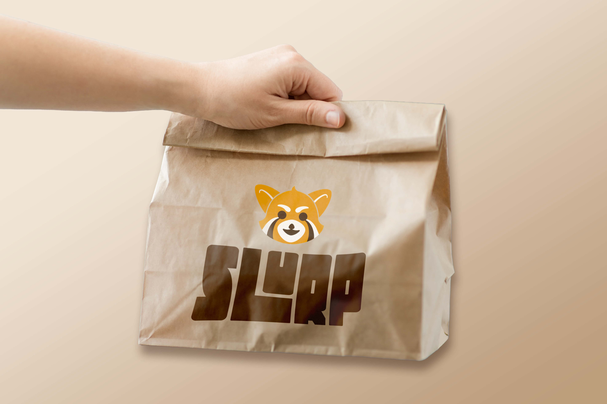
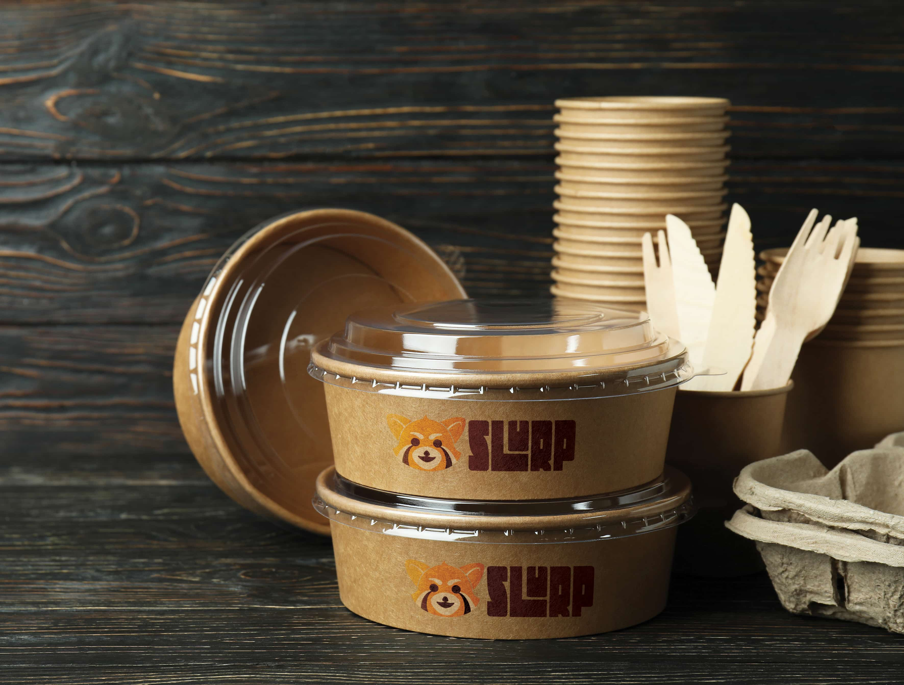
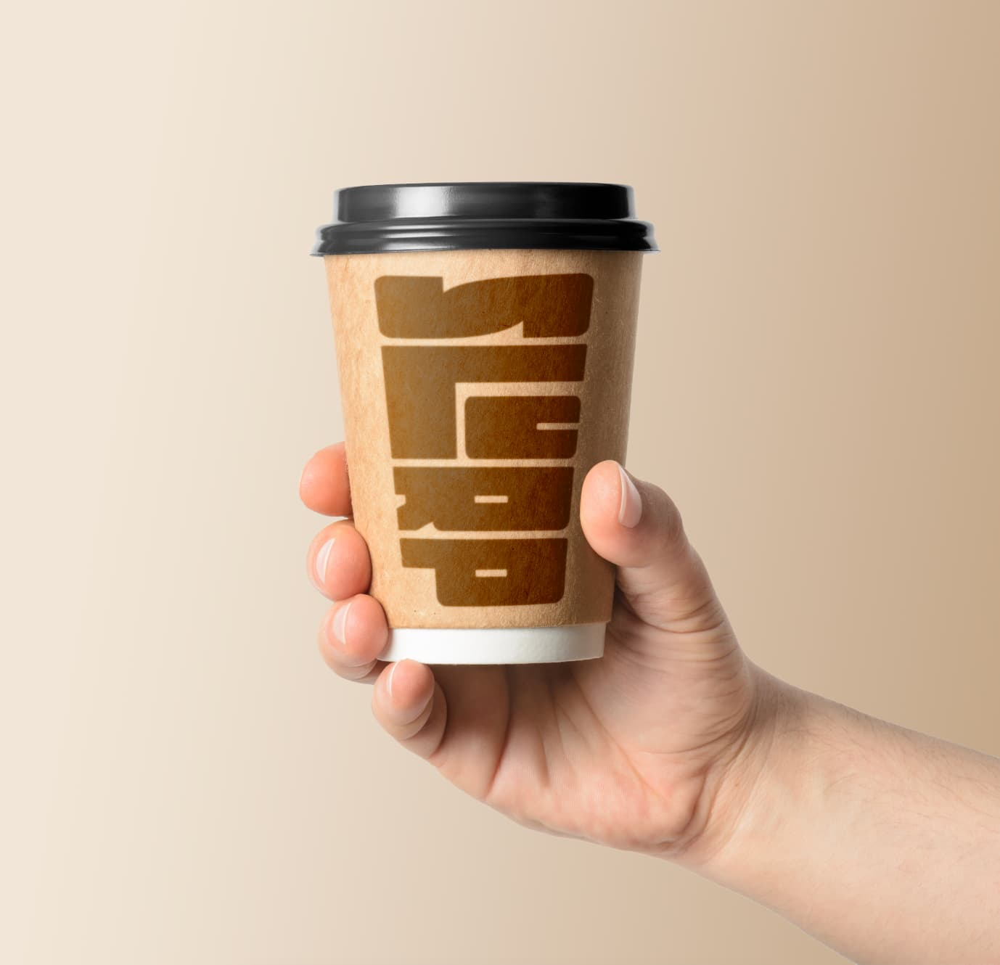
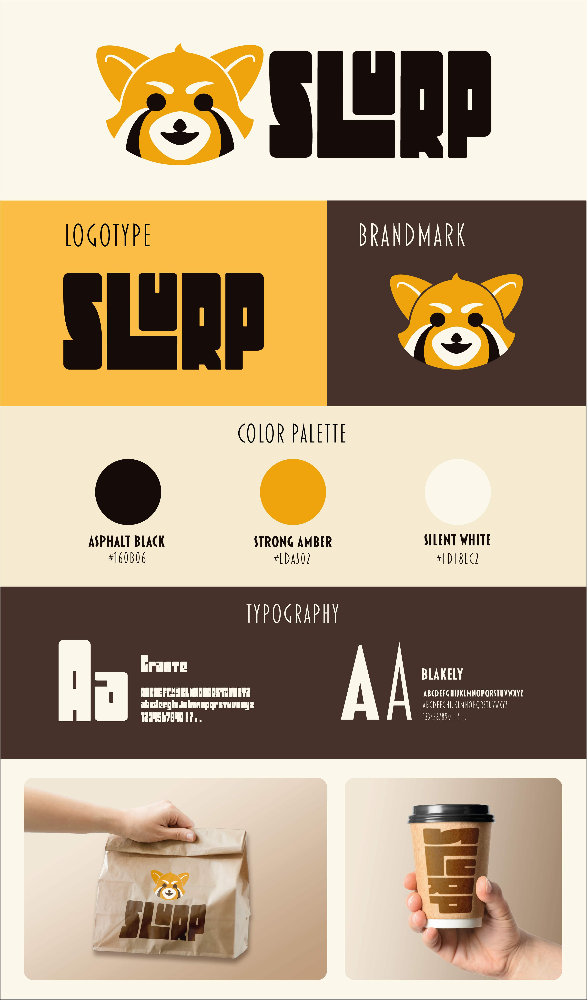

SLURP
Branding - Illustrator - Photoshop - Indesign




Projet Personel. Réalisation du branding pour la marque SLURP, un restaurant asiatique spécialisé dans les ramens.
Branding - Illustrator - Photoshop - Indesign




Projet Personel. Réalisation du branding pour la marque SLURP, un restaurant asiatique spécialisé dans les ramens.